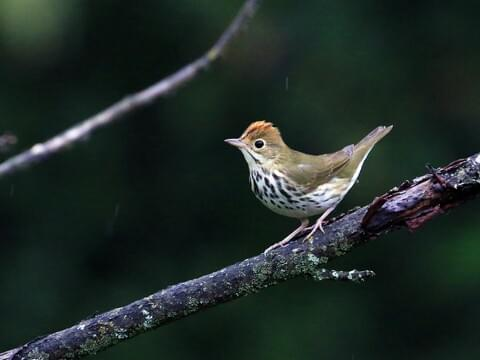

Ovenbird in Literature
Overview
About the Ovenbird
Ovenbird in Literature
References
The Oven Bird
Poem by Robert Frost
There is a singer everyone has heard,
Loud, a mid-summer and a mid-wood bird,
Who makes the solid tree trunks sound again.
He says that leaves are old and that for flowers
Mid-summer is to spring as one to ten.
He says the early petal-fall is past
When pear and cherry bloom went down in showers
On sunny days a moment overcast;
And comes that other fall we name the fall.
He says the highway dust is over all.
The bird would cease and be as other birds
But that he knows in singing not to sing.
The question that he frames in all but words
Is what to make of a diminished thing.

Overview
About the Ovenbird
Ovenbird in Literature
References
© Copyright 2026 A. Dorsey, F. Sarra